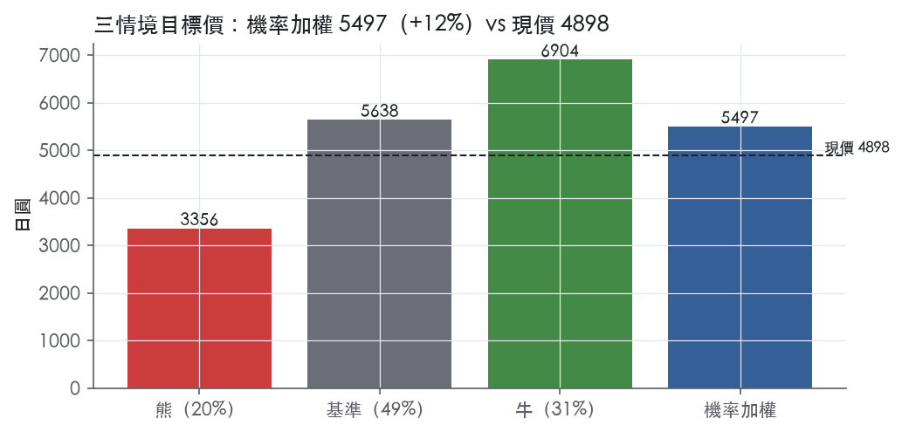
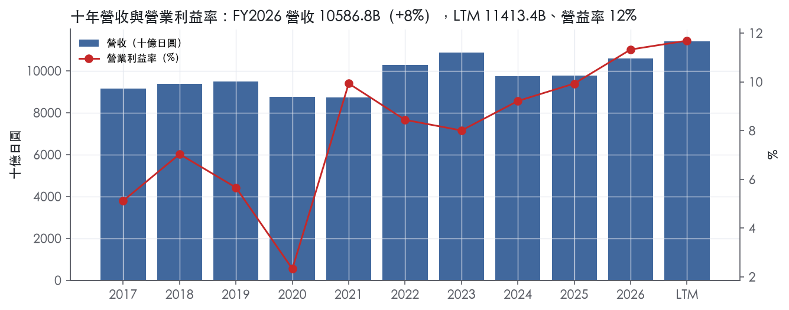
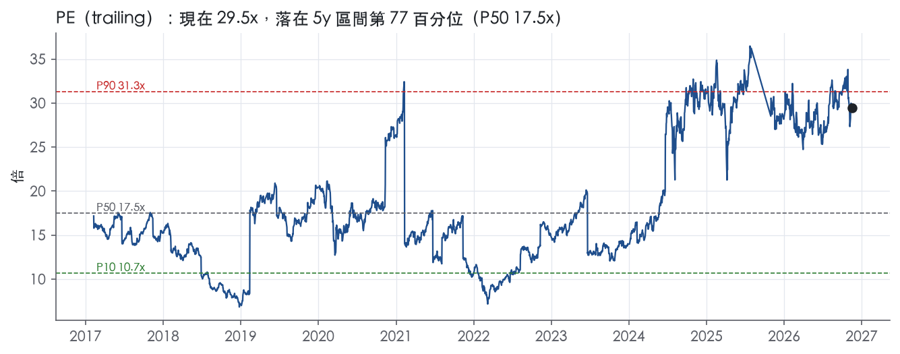
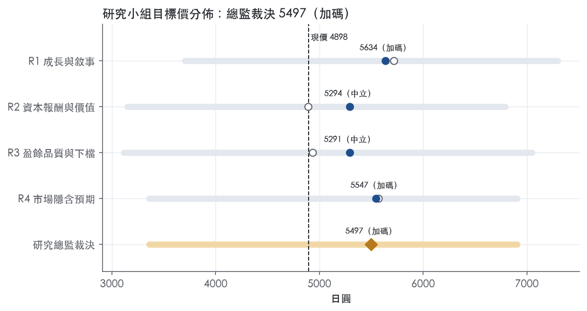
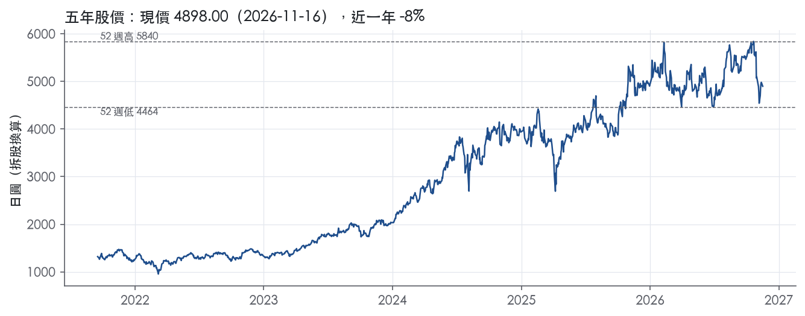

評等總表 › 未分類 › 6501.T
市場只付利潤率持平，看多加碼｜評等 加碼｜目標價 5497
| 報告日 | 評等 | 目標價 | 當時股價 | 超額報酬 |
|---|---|---|---|---|
| 2026-11-16 | 加碼 | 5,497 | 4,898 | +5.6% |
| 評等 | 加碼（邊界，鄰近中立） |
| 12 個月目標價 | 5497 日圓 |
| 現價 | 4898.00 日圓（2026-11-16） |
| 預期報酬 | 股價 +12.2%＋股息 1.2%＝總報酬 +13.4%；日股門檻 7.8%，超額 +5.6% |
| 估值方法 | P/E 22.0x，套在第 5–8 季的EPS（也就是一年後的未來四季） |
| 三情境 | 熊 3356／基準 5638／牛 6904 |
| 研究流程 | 四位研究員兩輪辯論＋研究總監裁決 |
| 資料來源 | EDINET、TDnet、J-Quants、Yahoo、FRED（全免費） |
市場只付利潤率持平，看多加碼（研究總監裁決，四位研究員兩輪辯論後）
評等 加碼（邊界，鄰近中立）｜12 個月目標價 5497 日圓（總監三情境機率加權 5574 與研究員中位數 5420 各半）｜現價 4898.00（2026-11-16）
預期報酬：股價 +12.2%＋股息 1.2%＝總報酬 +13.4%。日股門檻 7.8%，超額 +5.6%，離中立的分界不到三個百分點，屬邊界評等（落在其他級距的機率約四成）。
估值方法：P/E 22.0x，套在第 5–8 季的EPS（也就是一年後的未來四季）。三情境：熊 3356（20%）／基準 5638（49%）／牛 6904（31%）。
什麼會讓研究總監改變看法：Q3短信契約負債跌破3,200B且能源／鐵道出現非匯率的利潤率下滑（風險表第1條觸發），倍數降到19x、熊機率升到25%；FY2028期初計畫營收成長≥9%且Adjusted EBITA率≥14%，倍數升到市場持平22.6x以上、牛機率升到35%。
| 過去四季（實際，FY2027Q2） | 未來四季 | 第 5–8 季 | 第 9–12 季 | |
|---|---|---|---|---|
| 營收（B） | 11,413.4B | 12,611.8B | 13,620.8B | 14,438.0B |
| 營收成長 | 13.9% | 10.5% | 8.0% | 6.0% |
| 營業利益率 | 11.7% | 12.3% | 12.4% | 12.5% |
| EPS（日圓） | 166.18 | 228.06 | 256.29 | 282.15 |
| EPS 成長 | -4.5% | 37.2% | 12.4% | 10.1% |
| 每股股息（日圓） | — | 0.00 | 0.00 | 0.00 |
| P/E（現價） | 29.5x | 21.5x | 19.1x | 17.4x |
| 股息殖利率（現價） | 1.2% | — | — | — |
過去四季為申報數字；預測為研究總監的假設、程式計算。倍數與殖利率都用現價計算，用來看現價對應各期獲利的高低。
| 情境 | 機率（歷史） | 故事 | 未來四季營收成長 | 第 5–8 季營益率 | 倍數 | 目標價 | 股價漲跌 |
|---|---|---|---|---|---|---|---|
| 熊 | 20%（18%） | 對應風險表第1條：エナジー／鐵道長期請負契約見積原価重估，疊加本行美國下行（GDP 0.3）；倍數回到5年trailing P50附近 | 5.0% | 10.8% | 17.0x | 3356 | -31.5% |
| 基準 | 49%（50%） | 營收降檔至Inspire中段，營益率照公司計畫隱含路徑走到12.3–12.5%，倍數因成長降檔小幅低於市場持平 | 10.5% | 12.4% | 22.0x | 5638 | 15.1% |
| 牛 | 31%（32%） | 電網週期延續，Inspire的Adjusted EBITA率提前進入13–15%上半段，買回維持上半期步調，倍數到前瞻帶P90；y1營益率微調至R2牛情境的12.6% | 12.0% | 13.0% | 25.0x | 6904 | 41.0% |
目標價由程式依研究總監的驅動與倍數計算；機率由研究總監給定。括號內是歷史頻率：把這檔股票過去十年 12 個月報酬的波動形狀，置中在基準情境，結果落在各情境附近的比例。

四位研究員用不同方法各自估值，回應研究總監的質疑後交出第二輪，最後由總監逐點裁決。各研究員的主張見第七章，裁決理由見第八章，完整論證見《研究底稿》。
| 立場（一輪→二輪） | 加權目標價（一輪→二輪） | 評等（一輪→二輪） | 第二輪倍數 | 熊～牛目標價 | |
|---|---|---|---|---|---|
| R1 成長與敘事 | 看多→看多 | 5717→5634 | 加碼→加碼 | 25.0x | 3704～7299 |
| R2 資本報酬與價值 | 中性→中性 | 4889→5294 | 減碼→中立 | 24.0x | 3146～6792 |
| R3 盈餘品質與下檔 | 中性→中性 | 4937→5291 | 減碼→中立 | 21.0x | 3117～7052 |
| R4 市場隱含預期 | 看多→看多 | 5567→5547 | 加碼→加碼 | 22.0x | 3356～6904 |
| 研究總監裁決 | 看多 | 5497 | 加碼 | 22.0x | 3356～6904 |
目標價由程式依各自的驅動與倍數計算；評等＝機率加權總報酬 − 日股門檻。
日立是一家把IT、OT（控制・運用技術）與自家高品質產品三者疊在一起、靠Lumada數位平台把社會基礎設施現場數據轉成服務收入的集團型公司。截至2026年3月31日，公司及關係會社合計823社（連結子公司606社、權益法適用公司217社），以「デジタルシステム＆サービス」「エナジー」「モビリティ」「コネクティブインダストリーズ」四個成長部門為核心，加上「その他」共五個報告分部，涵蓋產品開發、生產、銷售到服務的完整價值鏈。公司自稱擁有最先端的IT、遍及190個國家現場知見的OT，以及打磨116年的高品質產品，目標是成為「以數位持續革新社會基礎設施的全球領導者」。客戶本質上是全球電力、鐵道、製造、金融、城市基建等現場營運方，而不是消費者終端。LTM合併營收11,413.40B日圓，規模遠大於多數同業的日本電機集團。
公司規模最大的敘事引擎是Lumada與HMAX，但五個報告分部各自承擔不同角色，分部別營收占比有報未揭露。「デジタルシステム＆サービス」涵蓋系統整合、雲端服務、顧問服務、IT產品（儲存、伺服器）、軟體與ATM，BU包括社會BU、金融BU、AI＆軟體服務BU及數位工程＆AI解決方案BU，主要子公司有日立系統、日立方案、日立Vantara、GlobalLogic等。「エナジー」涵蓋電力網（パワーグリッド）與核能，核心子公司為日立能源（Hitachi Energy）與日立GE Vernova核能；日立能源單體營收2,988.01B日圓，已超過合併營收10%門檻，是集團最大單一子公司。「モビリティ」即鐵道系統，主體是收購Thales鐵道信號事業後的日立Rail，單體營收1,192.24B日圓，同樣超過合併營收10%。「コネクティブインダストリーズ」涵蓋計測分析系統（半導體製造裝置、醫用分析裝置）、大樓系統（電梯、電扶梯）、生活與空調、產業機器及水環境方案，子公司有日立大樓系統、日立高科、日立產機系統等。從資本支出與研發費用的分布可以看出分部規模感：FY2026設備投資合計473.9B日圓中，エナジー佔268.1B（年增92%），是投資強度最大的分部；コネクティブインダストリーズ70.9B、デジタルシステム＆サービス69.9B、モビリティ31.5B。研發費合計290.3B日圓中，コネクティブインダストリーズ最高達105.1B，エナジー70.8B，モビリティ33.6B，デジタルシステム＆サービス49.6B。這組合顯示エナジー是資本投入最重的成長部門，コネクティブインダストリーズ是技術投入最重的部門，モビリティ則相對最小但正靠Thales、Omnicom併購擴充版圖。
公司採「全球自律分散型經營」，在米州、EMEA、APAC、印度、日本、中國六大區域各自尋找成長機會並就地推進事業拓展。通路上，Hitachi America、Hitachi Asia、日立（中國）、Hitachi Europe、Hitachi India是各地區統括公司，負責銷售集團產品並推動地區研發。英國市場是具體案例：日立能源被選為英國最長HVDC聯接線換流站供應商，並參與Eastern Green Link3專案。客戶結構對應BU設置——社會BU、金融BU、原子力BU、鐵道BU、アーバンシステムBU等——指向電力公司、鐵道營運方、金融機構、政府與工業客戶，而非消費端零售。公司在美國相互關稅衝擊下已採取適當的價格轉嫁等對策，並透過擴大當地採購率與供應路線多元化強化事業韌性。
最近四季營收與利潤率同步向上，顯示能源與系統整合需求仍在加速。FY2026Q3（至2025年12月）營收2,714.39B日圓，年增10.1%，營益率11.7%；FY2026Q4（至2026年3月）營收3,084.98B日圓，年增11.3%，營益率12.1%（is/dv季表）。FY2027Q1（至2026年6月）營收2,709.59B日圓，年增20.0%，營益率9.3%→實際記錄為10.9%；FY2027Q2（至2026年9月）營收2,904.44B日圓，年增14.8%，營益率12.0%（is/dv季表）。對應半期報告書（中間決算）口徑：2027年3月期上半期（4–9月）合併銷售收益5,614,028百萬円＝5,614.03B日圓，較去年同期增長17%，毛利率30.1%，調整後營業利益643,260百萬円＝643.26B日圓、利益率11.5%，較去年同期增長27%。惟上半期歸屬母公司中間利益416,621百萬円＝416.62B日圓，較去年同期減少12%（降至88%），每股基本中間利益93.20円、稀釋93.10円，主要因去年同期有事業再編等一次性收益95,994百萬円挹注、本期轉為微額支出214百萬円。公司最新全年業績預想（2027年3月期）為營業利益1,450.00B日圓、稅前利益1,370.00B日圓、歸屬母公司淨利920.00B日圓、每股盈餘206.41円。以上半期歸屬淨利416.62B對比全年計畫920.00B，隱含下半期需貢獻約503.4B，較上半期成長約21%——考慮到日本公司期初計畫慣性偏保守、公司上半期營益率已優於去年同期，這個全年計畫達成的機率不低，但仍要觀察自由現金流與自結現金部位是否支持持續的庫藏股買回。
公司在經營計畫「Inspire 2027」下，設定2024–2027年銷售收益CAGR 7–9%、2027年度Adjusted EBITA率13–15%、2027年度現金流轉換率90%以上、2027年度ROIC 12–13%四項財務目標。更長期的目標是「Lumada 80-20」——Lumada事業銷售收益占比達80%、Adjusted EBITA率達20%。成長引擎方面，公司把快速擴張的物理AI（Physical AI）與代理型AI（Agentic AI）市場視為順風，透過把裝機基礎（デジタライズドアセット）產生的數據以AI與領域知識分析後，轉為可持續收費的「HMAX」數位服務，已從鐵道業拓展至能源、製造、大樓維護等多個產業。各部門具體敘事：エナジー靠「HMAX Energy」提升日立能源裝機基礎的服務化比例，核能方面與GE Vernova合作在加拿大推進SMR首座機組，並拓展至北美與波蘭等歐洲市場；モビリティ靠整合Thales鐵道信號事業與2025年收購Omnicom的數位監視技術強化「HMAX Mobility」；コネクティブインダストリーズ聚焦ファシリティ、半導體製造、醫療診斷、醫藥品製造四個重點領域推展「HMAX Industry」。公司也將AI運用於自身改革（「カスタマーゼロ」），把內部AI導入系統整合生產力提升的經驗轉售給客戶。
我們的判斷：日立已經從傳統綜合電機轉型為「軟體＋服務重、靠併購堆疊」的基礎設施科技集團，Lumada/HMAX是核心敘事，但目前合併調整後營益率約11.5%（半期口徑）距Lumada 80-20設定的20%長期目標仍有明顯距離，執行節奏值得持續追蹤。上半期庫藏股買回達290.40B日圓、遠高於去年同期171.65B日圓，顯示資本配置正加速向股東回報傾斜，呼應東證對PBR改善與資本效率的壓力。政策保有株（交叉持股）方面，公司持續每年檢視並出售不具合理性的持股，是另一個可能釋放資本的來源，但規模相對有限，對整體股東回報貢獻預期不大。

日立的優勢建立在少數全球領先的產品線和龐大的裝機基礎上，集團並非整體都有護城河。
無形資產（技術與市占）
轉換成本
效率規模
網路效應與成本優勢沒有充分證據，不列入。
數字支持「窄」，但還不足以支持「寬」。
支持的一面
衝突的一面
為何仍給窄、不升寬
最大的風險是成長期資本過度投入，以及併購資產的報酬率偏低。
| 指標 | 最新 | 十年平均 | 標準差 | 最低 | 最高 |
|---|---|---|---|---|---|
| ROIC | 15.5% | 14.5% | 4.1% | 5.7% | 20.7% |
| 毛利率 | 30.0% | 26.7% | 1.7% | 24.7% | 30.0% |
| 營業利益率 | 11.3% | 7.7% | 2.6% | 2.3% | 11.3% |
| FCF 利潤率 | 11.1% | 4.7% | 3.0% | 1.5% | 11.1% |
| ROE | 12.9% | 11.1% | 3.8% | 2.7% | 15.0% |
程式計算。資本成本代理值（10 年債＋5%）：10.1%；ROIC 平均減資本成本：4.4%；ROIC 有資料的 8 年中，高於資本成本 7 年。
日立的盈餘品質在量化計分表上幾乎全線綠燈：現金流對淨利比率、應計比率、槓桿、利息保障、股數稀釋方向全部優於門檻【判，依量化底稿】。唯一一個黃燈是（股利＋回饋）／淨利，LTM 30.2%、近三年 26.9%、十年平均 33.0%，這是資本配置選擇而非盈餘造假或現金斷流的訊號。有價證券報告書明確說明資金用途是「成長に向けたM&A、人財への投資、設備投資や研究開発投資、株主還元等」，股東回饋只是多個資金用途之一。整體結論是盈餘可以直接信任，不需要大幅打折。
營業現金流對淨利的比率 LTM 2.30x、近三年平均 1.87x、十年平均 2.36x，三個期間都遠高於 1.00x 的綠燈門檻。自由現金流對淨利比率 LTM 1.54x、近三年 1.23x，同樣優於門檻。應計比率 LTM 為 -6.4%、近三年 -4.5%、十年平均 -3.5%，全部為負值，代表盈餘的成長不是靠應計項目堆出來的。拿申報數字對照：FY2026 全年營業現金流 1,668.0B 日圓對照歸屬母公司淨利 802.3B 日圓，CFO 遠高於淨利。半年報也延續同樣型態：FY2027 上半期 CFO 798.88B 對中間期淨利 416.62B，CFO 年增、淨利年減，代表現金品質比帳面淨利更穩。FY2026 核心自由現金流（扣除 M&A 與資產出售的經常性現金流）為 1,170.2B 日圓，與量化底稿的 FCF 1,170.23B 幾乎一致，兩套數字可以互相驗證【量化底稿】。
日立用 Adjusted EBITA 作為核心獲利指標，定義是調整後營業利益加回企業併購產生的無形資產攤銷，FY2026 為 1,311.4B 日圓，較前年增加 227.9B 日圓。這個調整項目（PPA 攤銷回加）我判斷是真實但非現金的會計處理，可以理解但不代表完全沒有經濟成本，因為這些無形資產本來就是用真錢買來的。GAAP 淨利裡還有兩筆一次性項目幾乎互相抵銷：FileStorage 事業商譽減損損失 151.5B 日圓（屬於過去收購失敗的真實經濟成本認列），對沖 Johnson Controls-Hitachi Air Conditioning (UK) 股權出售認列的事業再編等利益 131.8B 日圓（一次性非經常收益，不應外推到未來）。另外還有特別退職金 16.1B 日圓，屬於重組性質的真實現金支出，應視為經常性以外但真實的成本。整體而言 FY2026 的 GAAP 淨利 802.3B 日圓，減損與出售利得大致互抵，不需要再額外大幅加減，但往前看的 run-rate 淨利不該包含那 131.8B 的一次性出售利得。
公司處於淨現金部位，淨負債為 -1,460.14B 日圓，淨負債／EBITDA LTM 為 -0.81x，槓桿不構成限制。FY2026 年底有利子負債合計 1,009.0B 日圓，資本合計對有利子負債比率降至 0.15 倍，利息保障倍數 LTM 46.5x顯示付息能力完全沒有壓力。公司維持 Moody's A2、S&P A-、R&I AA- 的長期信評，並保有 505.0B 日圓的承諾額度未使用，流動性充裕。資本配置上看得出東證資本效率改革壓力下的加速回購：FY2027 上半期自己股份買回支出 290.40B 日圓，較前年同期 171.65B 日圓大幅增加，同期支付股息 121.38B 日圓（母公司）。稀釋股數方面，FY2026 稀釋股數 4.54B 股，較前一年持續下降（資料包年度表），LTM 年變動 -0.3%，方向正確。
計分表唯一的非綠燈是（股利＋回購）／淨利，LTM 30.2%、近三年 26.9%、十年平均 33.0%，黃燈。這不是現金流跟不上盈餘的問題——現金流對淨利比率同期是綠燈 2.30x——而是公司把更多現金留給成長投資，有報明確列出資金用途優先序是「成長に向けたM&A、人財への投資、設備投資や研究開発投資、株主還元」，股東回饋只是其中一項，比率偏保守是策略選擇而非盈餘品質缺陷。同時觀察到最新一期回購金額已明顯加碼（290.40B 對 171.65B），顯示比率有上升中的趨勢，可能與東證要求改善資本效率、修正 PBR 的壓力有關。除此之外計分表沒有其他紅燈或程式標記的紅旗需要回應，SBC／營收欄位缺資料（—），本系統未納入判斷，不構成品質疑慮的依據（量化底稿顯示空值）。
估值應以 GAAP 歸屬母公司淨利為主要錨點，因為現金流品質驗證了 GAAP 盈餘的可信度，不需要像一般有大量應計或 SBC 膨脹的公司那樣系統性打折。但在建立前瞻盈餘預測時，應把 FY2026 一次性出售利得 131.8B 日圓剔除，否則會高估未來一年的淨利基礎。淨現金部位與極低槓桿意味著槓桿本身不限制估值倍數，EV/EBITDA、P/E 可以用公司基本面（成長與 ROIC）決定，不必因為資產負債表風險而壓低倍數。
| 項目 | LTM | 近三年 | 十年 | 燈號 | 規則 |
|---|---|---|---|---|---|
| 營業現金流／淨利 | 2.30x | 1.87x | 2.36x | 綠 | ≥1.00x 綠、<0.80x 紅 |
| 自由現金流／淨利 | 1.54x | 1.23x | 0.96x | 綠 | ≥0.90x 綠、<0.60x 紅 |
| 應計比率（(淨利−CFO)／平均總資產） | -6.4% | -4.5% | -3.5% | 綠 | ≤0.0% 綠、>5.0% 紅 |
| SBC／營收 | — | — | — | — | ≤3.0% 綠、>8.0% 紅 |
| 淨負債／EBITDA | -0.81x | -0.61x | -0.49x | 綠 | ≤1.50x 綠、>3.00x 紅 |
| 利息保障倍數（營業利益／利息） | 46.5x | 23.0x | 24.8x | 綠 | ≥8.00x 綠、<3.00x 紅 |
| 稀釋股數年變動 | -0.3% | -1.4% | -0.7% | 綠 | ≤0.0% 綠、>3.0% 紅 |
| （股利＋回購）／淨利 | 30.2% | 26.9% | 33.0% | 黃 | ≥50.0% 綠、<0.0% 紅 |
程式計算；燈號以 LTM（無則近三年平均）判定。
| 風險 | 觸發指標（看什麼數字、在哪裡看） | 對 EPS 的影響方向與粗略幅度 | 未來 12 個月發生機率（高／中／低） | 出處 |
|---|---|---|---|---|
| 長期請負契約（エナジー／モビリティ長期案件）估算修正、工程延遲、損害賠償 | 決算短信各分部調整後營業利益年增率；有報「注29．コミットメント及び偶發事象」揭露的新增訴訟/賠償金額 | 負向，大；長期契約一次性認列損失可直接吃掉單季營益（公司自述「かかる見積りは變動する可能性があり…悪影響を及ぼす可能性があります」） | 中 | |
| 商譽減損（デジタルシステム＆サービス1,429,043百萬円＝1,429.04B、エナジー659,712百萬円＝659.71B、モビリティ275,583百萬円＝275.58B、コネクティブインダストリーズ283,163百萬円＝283.16B商譽） | 半期／年度資產負債表「のれん」科目變動；FY2027中間期末のれん2,639,982百萬円＝2,639.98B，較FY2026期末2,647,501百萬円＝2,647.50B已減少7,519百萬円＝7.52B（部分為匯率影響） | 負向，大；減損直接衝擊淨利與EPS，且規模與合併股東權益（親會社株主持分合計6,525,399百萬円＝6,525.40B）相比不小 | 中 | |
| 匯率波動（日圓、歐元兌日圓） | 公司揭露FY2027匯率感應度：日圓每變動1円，銷售收益影響14.5B日圓、Adjusted EBITA影響1.5B日圓；歐元每變動1円，銷售收益影響9.0B日圓、Adjusted EBITA影響0.8B日圓；對比現行usdjpy 158.23與公司全年計畫假設匯率的落差 | 日圓走強時方向為負，幅度依感應度表直接推算；日圓走弱則反向增益 | 高（匯率本身波動是常態，日圓現處158附近為多年高位区間，反轉風險不低） | |
| 投資股票（政策保有股）與持分法適用公司評價下跌 | 資產負債表「有價証券及びその他の金融資產」科目變動（FY2027中間期末非流動部分398,687百萬円＝398.69B，較FY2026期末593,559百萬円＝593.56B已減少194,872百萬円＝194.87B）；持分法投資612,142百萬円＝612.14B（FY2026期末）之後續減損公告 | 負向，中；一次性評價損計入損益表「その他の費用」或持分法損益科目 | 低～中 | |
| 競爭激化與需求急減（情報機器、昇降機、産業用機器、送配電設備、鐵道車輛・信號系統市況） | 各分部季度營收年增率是否轉負；決算短信分部別調整後營業利益率是否連續下滑 | 負向，中；公司自述「市況が低迷した場合…悪影響を及ぼす」，且エナジー、モビリティ為長期案件型業務，需求下滑會遲延顯現在損益 | 低 |
長期請負契約估算修正是最可能直接打到單季EPS的風險。公司在有報明確承認，長期請負契約的收益認列依賴「見積原價總額」等重大假設，且「コストの變動は、當グループのコントロールの及ばない様々な理由によって發生する可能性があります」，一旦工程遅延、成本上升或契約解除，公司需要重新檢視當初估算，「このような場合…かかる見直しは、當グループの事業、財政狀態及び經營成績に悪影響を及ぼす可能性があります」。這類風險在エナジー（電力網、核能SMR）與モビリティ（鐵道信號系統，剛整合Thales、Omnicom）兩個長案件密集的分部尤其集中，而這兩個分部正是FY2026設備投資增幅最大的分部（エナジー 268.1B日圓、年增92%），意味著在建工程規模持續擴大，未來估算修正的分母也在擴大。監測方法是每季決算短信分部別調整後營業利益率是否出現非匯率解釋的突然下滑。
商譽減損是規模最大的尾部風險。日立透過併購（Thales鐵道、GlobalLogic、日立能源整合等）累積了巨額商譽，四大分部合計約2,647.50B日圓（FY2026期末），相當於合併股東權益6,568.37B日圓（FY2026期末）約四成。公司自述「投資先事業の収益性が低下し、投資額の回収が見込めない場合、のれんの減損等、多額の損失が發生する可能性があります」。目前中間期のれん已從2,647.50B降至2,639.98B（減少7.52B），公司解釋中未明確區分是匯率換算差額還是減損測試結果，這點需要在下一份決算短信的分部附註追蹤。
匯率是唯一公司給出具體敏感度數字的風險，也是機率最高的一條。公司揭露FY2027匯率感應度：日圓每變動1円，銷售收益影響14.5B日圓、Adjusted EBITA影響1.5B日圓；歐元每變動1円，銷售收益影響9.0B日圓、Adjusted EBITA影響0.8B日圓。現行usdjpy為158.23（2026-11-06），若公司全年計畫所假設的匯率明顯低於現價（有報未揭露全年計畫假設匯率的具體數字，需待決算短信補充），日圓升值風險會直接壓縮Adjusted EBITA。由於日圓兌日圓目前處於多年高位區間，雙向波動本身就是基本面常態，故機率列為「高」。
投資股票與持分法公司評價風險屬於資產負債表側的拖累，而非營運面。公司持有非上市股票104檔（帳列金額21,206百萬円＝21.21B）及上市股票312檔（帳列金額250,312百萬円＝250.31B）（皆FY2026期末），加上持分法適用公司612,142百萬円＝612.14B（FY2026期末，含Astemo等「全社及び消去」部分290,248百萬円＝290.25B）。中間期末這塊「有價証券及びその他の金融資產」非流動部分已從593.56B降至398.69B，減少194.87B，公司未在此份短信說明是出售還是評價調整，需要追蹤下一份財報附註。
競爭激化與需求急減是公司自己列為風險但機率相對最低的一條，因為目前營收動能仍強。最近四季營收年增率持續在10%以上（FY2026Q3 +10.1%、FY2026Q4 +11.3%、FY2027Q1 +20.0%、FY2027Q2 +14.8%），顯示公司目前並未處於需求下滑階段。但公司自己提示「エナジー分野及び鐵道分野においては、長期案件やプロジェクト型ビジネスの特性上、需要變動の影響が賣上・損益に遲れて顯在化する可能性があります」，意味著即使現在訂單強勁，未來景氣反轉時，損益表反映會有時間差，不能用當期訂單簿樂觀外推。
庫藏股買回加速是否可持續，取決於自由現金流能否追上。上半期庫藏股取得達290,396百萬円＝290.40B，遠高於去年同期171,649百萬円＝171.65B，若下半期FCF不如上半期（半期CFO、FCF數字未單獨揭露，需待年度資料包更新），公司可能被迫放緩買回節奏，這會直接影響市場對EPS成長與股東回報敘事的預期，進而壓縮P/E倍數。
全年計畫對下半期淨利的隱含要求偏高，若未達成會被市場視為保守計畫失靈的訊號。上半期歸屬母公司中間利益為416,621百萬円＝416.62B，較去年同期減少12%（主因去年同期有事業再編等一次性收益95,994百萬円＝95.99B挹注，本期僅微額支出214百萬円）；而全年計畫歸屬母公司淨利為920.00B，隱含下半期需貢獻約503.4B，較上半期成長約21%。雖然日本公司期初計畫慣性偏保守、公司上半期調整後營業利益率已優於去年同期（11.5% vs 10.6%），這個差距仍值得在Q3短信公布時第一時間核對是否上修或維持不變。
現價 4898.00 對應 trailing（過去四季）P/E 29.5x、EV/EBITDA 11.4x、EV/EBITA 15.3x、EV/Sales 1.8x、FCF 殖利率 5.3%。主要估值倍數 P/E 現在 29.5x，落在5 年區間第 77 百分位（P10／P50／P90 = 10.7x／17.5x／31.3x）。

把程式的機械基準預測放到現價下，市場付的前瞻倍數是：P/E（未來四季） 22.6x、P/E（第 5–8 季） 20.2x。反推 DCF 顯示市價隱含未來五年營收年成長 9.4%（WACC 9.0%、終值成長 3.0%、FCF 利潤率 7.2%，SBC 不加回）。
| 倍數 | 現在 | 5 年 P10 | 5 年 P50 | 5 年 P90 | 現在分位 | 全期 P50 |
|---|---|---|---|---|---|---|
| P/E | 29.5x | 10.7x | 17.5x | 31.3x | 77.4% | 16.1x |
| EV/EBITDA | 11.4x | — | — | — | — | 5.7x |
| EV/EBITA | 15.3x | 7.5x | 11.9x | 19.9x | 55.8% | 10.0x |
| EV/EBIT | 15.3x | 7.5x | 11.9x | 19.9x | 55.8% | 9.7x |
| EV/Sales | 1.8x | 0.6x | 1.2x | 2.1x | 68.8% | 0.7x |
| P/S | 1.9x | 0.6x | 1.4x | 2.2x | 71.3% | 0.6x |
| P/FCF | 19.1x | 17.9x | 21.0x | 32.3x | 26.1% | 19.9x |
trailing 倍數（股價 ÷ 過去四季）；分位以每個交易日計算。
（日股同業籃尚未建置：評等門檻用日股絕對門檻＝日本 10 年公債＋股權風險溢酬 5%，見首頁。）
事後實現前瞻倍數帶（P/E，2018-11-21..2025-11-19）：P10／P50／P90 = 6.5x／12.7x／25.2x。它是每個交易日的股價除以之後四季實際實現的指標；一年後，今天的第 5–8 季正是那時的未來四季，所以這條帶是 12 個月目標價的同口徑倍數。因為用的是事後實際而非當時預期，過去成長超乎預期的公司這條帶會偏低。
程式的機械基準（成長率從過去四季年增率三年收斂到 6%、利潤率持平）用 事後實現前瞻 P/E P50 估值得到 3070（-37.3%），市場現行前瞻倍數（現價 ÷ 基準 未來四季指標）一年後持平，套在基準 第 5–8 季指標得到 5464。這兩個數字只是參考點，不是本報告的目標價；研究員對這個定價的回應在第七章。
下表是每位研究員第一輪（各自獨立）與第二輪（回應研究總監的質疑後）的結果。目標價全由程式依各自的假設計算。
| 立場（一輪→二輪） | 加權目標價（一輪→二輪） | 評等（一輪→二輪） | 第二輪倍數 | 熊～牛目標價 | |
|---|---|---|---|---|---|
| R1 成長與敘事 | 看多→看多 | 5717→5634 | 加碼→加碼 | 25.0x | 3704～7299 |
| R2 資本報酬與價值 | 中性→中性 | 4889→5294 | 減碼→中立 | 24.0x | 3146～6792 |
| R3 盈餘品質與下檔 | 中性→中性 | 4937→5291 | 減碼→中立 | 21.0x | 3117～7052 |
| R4 市場隱含預期 | 看多→看多 | 5567→5547 | 加碼→加碼 | 22.0x | 3356～6904 |
| 研究總監裁決 | 看多 | 5497 | 加碼 | 22.0x | 3356～6904 |
目標價由程式依各自的驅動與倍數計算；評等＝機率加權總報酬 − 日股門檻。
分歧度：第一輪 加權目標價 4889～5717（區間＝現價的 17%）· 倍數 20～26x · 立場 看多×2、中性×2；第二輪 加權目標價 5291～5634（區間＝現價的 7%）· 倍數 21～25x · 立場 看多×2、中性×2。

| 研究員 | 第二輪主張 | 堅持的理由 |
|---|---|---|
| R1 成長與敘事 | 看多，目標25倍P/E，未來一年營收成長10.5%。 | 營益率、自由現金流和淨現金都在五年最強位置，倍數不退回中位數。 |
| R2 資本報酬與價值 | 中性，目標24倍P/E，承認利潤率、淨現金和買回改善。 | 併購後投入資本報酬率最高15.8%，沒有新台階，不給28.6倍。 |
| R3 盈餘品質與下檔 | 中性，目標21倍P/E，盈餘扎實，但報酬只在門檻附近。 | 營業現金流靠預收款墊高，公司自訂轉換率只要90%，他不外推。 |
| R4 市場隱含預期 | 看多，目標22倍P/E，市場只付營益率持平11.7%。 | 毛利率連三年上升到30.0%，市場看錯了利潤率擴張的方向。 |
每位研究員的逐條回應與完整論證見《研究底稿》（6501.T_研究底稿_2026-11-16.docx）。
| 分歧點 | R1 成長 | R2 價值 | R3 品質 | R4 預期 | 什麼資料會分出勝負 |
|---|---|---|---|---|---|
| 1. 目標倍數：相對市場持平 22.6x（Q5–Q8）收縮多少 | 25x@ntm，trailing 帶 P50 之上給個股溢價（基準目標 5552） | 24x@ntm，ROIC 未升台階、FCF 含預收款、資本密度上升（5447） | 21x@q5_q8，前瞻帶 P75；EPS 成長降檔、現金轉換率回落（5166） | 22x@q5_q8，P75–P90 之間，只為成長降檔小幅收縮（5590） | 2027-05 FY2028 期初計畫的 EPS 成長；FY2027 FCF 是否守住 1,150B |
| 2. NTM 營收成長 | 10.5%：Q1→Q2 降檔、基期墊高 | 10.0%：加 Inspire 7–9%、美國成長 1.8 | 9.0%：直接套 Inspire 區間 | 10.5%：匯率依感應度極小，只剩美國成長 | 2027-02 Q3 短信營收年增與契約負債 |
| 3. 營益率路徑 y1/y2/y3 | 12.0/12.3/12.5 | 12.3/12.4/12.5：公司計畫隱含下半期遠高於上半期 | 12.0/12.3/12.5：對 Inspire 刻意打折 | 12.0/12.3/12.6：近兩季 run-rate | 2027-05 FY2027 全年調整後営業利益率；Q3 短信是否上修 1,450B |
| 4. 熊情境的機制、深度、機率 | 能源資本支出週期反轉；22%、19x、3704 | 停滯性衰退＋預收款反轉；23%、17.5x、3146 | 風險表第 5 條需求急減；16%、16x、3117 | 風險表第 1 條長約估算修正；19%、17x、3356 | Q3 短信能源／鐵道分部是否出現非匯率的利潤率下滑 |
| 5. Q5–Q8 營收成長 | 8.0% | 7.0%：Inspire＋美國 1.8 | 7.0%：Inspire | 8.0%：Inspire 正中 | 2027-05 FY2028 期初計畫的營收成長率 |
分歧 1：倍數——選 R4，22x eps@q5_q8。 四人的基準目標只差 5166 到 5590（程式結果表），期間口徑不是分歧所在：R1、R2 走 trailing 帶配 ntm，落點和 R4 幾乎相同。真正的差別是 R3 的兩條收縮理由。第一條（EPS 成長降檔）我接受，也是 R4 把 22x 放在市場持平 22.6x 之下（程式檢查表 −3%）的唯一理由：季營收年增從 20.0% 降到 14.8%（／Q2），基準模型把成長收斂到 6%，一年後市場面對的是更低的前瞻成長，這是個股因素，不是利率。第二條（現金轉換率回到 90% 使 FCF 殖利率支撐回落）不能再扣一次：主尺是本益比，P/FCF 位於 5 年分位 26.1%本來就不是這個倍數的支柱；上半期買回 290.40B 對去年同期 171.65B，現金回饋在加速而不是減弱。R3 的 21x 只比零報酬倍數 20.2x高一點，基準目標 5166、+5.5%（程式結果表），等於主張市場一年後幾乎不為成長付錢。R2 的 ROIC 論點——併購後可比區間 FY2023 15.8%、FY2026 15.5%（／FY2026）沒有新台階——是事實，但它否定的是 28.6x 的新常態，四人都同意，不構成低於 22x 的理由。錨是事後實現前瞻帶 P75 21.1x 到 P90 25.2x（／p90）。這條帶對日立偏低：EPS 從 FY2019 的 46.05 走到 FY2026 的 176.63（／FY2026），事後 EPS 遠高於當時預期，所以 P50 12.7x 不是錨，P75 以上才是重整後日立的正常區。
分歧 2：NTM 營收——選 R4，10.5%。 R3 的 9.0% 是把 2024–2027 年度的 CAGR 7–9%當成單年預測，但公司已跑在前面：FY2026 +8.2%、上半期前年同期比 117%；要在兩季內從 14.8% 掉進區間，需要訂單轉負，而契約負債仍由 3,054.66B 升到 3,290.47B。不追到基準 11.2% 的理由來自同一張表：上半期契約負債增加 263.49B，前年同期 358.48B，訂單成長在放緩，NTM 後半又要對上 +17% 的基期。本部的營收預測連機械基準在內誤差中位數都是負的（−0.6% 到 −0.8%），R3 偏低的紀錄更不支持再往下。
分歧 3：營益率——選 R2，12.3%／12.4%／12.5%。 決定性證據是公司計畫：全年營業利益 1,450.00B對上半期 643.26B、利益率 11.5%，隱含下半期利益率明顯高於上半期；FY2026Q3、Q4 已是 11.7%、12.1%（／Q4）。NTM 的前半段就是這個下半期，R1、R3、R4 的 12.0% 等於假設公司連自己的保守計畫都達不到；R1 撤回了對比計畫的說法（說期間不同），卻沒注意 NTM 有兩季正是計畫期間。擴張機制是毛利率 29.8%→30.1%、販管費前年同期比 114% 低於營收 117%；有報計畫假設匯率 150 円／ドル比本行 153 更強，計畫內含小幅匯率緩衝。y2 12.4% 換成 Adjusted EBITA 口徑仍在 13–15% 的下半段（FY2026 Adjusted EBITA 1,311.4B對營益率 11.3%，口徑差約一個百分點，見第一輪 E1），R3 要的打折已經在裡面。本部營業利益預測的誤差中位數：總監 −2.4%、R1 −2.8%、R2 −4.8%、R3 −3.3%，系統性偏低；只有 R4 接近零（+0.2%），但他的 12.0% 只看近兩季 run-rate，沒有用到計畫隱含的下半期。y3 取多數的 12.5%，R4 的 12.6% 沒有可區分的證據。
分歧 4：熊情境——選 R4。 熊情境必須對應風險表。R1、R2 看不到風險章，他們的「能源資本支出週期反轉」是護城河章的多年侵蝕機制，不是 12 個月觸發事件。R3 的第 5 條（需求急減）被風險章評為「低」，且公司自述能源與鐵道的需求變動「遅れて顕在化」，12 個月內靠需求走到 −40% 的路徑最弱。R4 的第 1 條（長期請負契約估算修正）是風險章排第一、機率「中」的條目，曝險基礎正在擴大：エナジー設備投資 268.1B、年增 92%，棚卸資産由 1,770.48B 增至 1,887.62B，英國 HVDC、EGL3 在執行中。深度取 R4 的營益率 11.2／10.8／10.8 與 17x（約當 5 年 trailing P50 17.5x）；R2 的 9.8% 要衰退與超支同時發生，列為不加權的深尾。
分歧 5：Q5–Q8 營收——選 R4，8.0%。 7% 與 8% 都在 Inspire 區間內，R2、R3 沒有提出落在區間下半的個別證據；反推 DCF 顯示市價隱含五年 9.4%，8% 已低於市場，再往下需要訂單轉弱的證據。
漂移、利率與總經偏離。 程式標 R2 向中位數靠攏 60%、R3 56%。逐項核對：R2 的變動來自 V2（計畫隱含利潤率）、V4（短信現金流量表）與轉發的匯率感應度；R3 來自 Q1（熊情境超出置中 P10）與 Q2（撤回 JGB 理由），每項都有文件出處，而且是回應我的審查，不是靠攏。R2 的 y2／y3 上調只為了路徑不倒退、沒有新證據，但落點與我的裁決相同，不另退回；drift_rejections 為空。R3 拒絕 Q4 成立：有報確有「見通しの為替レート 150円／ドル、175円／ユーロ」，主要風險章漏看。利率：R3 已撤回用 JGB 壓倍數，其餘三人沒有用利率。總經：四人 macro_deviations 皆空，匯率一律改用公司感應度（日圓每 1 円 Adjusted EBITA 1.5B），158.2 到 153 不到任何驅動的精度；本行美國與日本前提全數採用，不接受也不需要任何偏離。
與機械基準不同的驅動：
目標倍數：22x，eps，q5_q8。錨是事後實現前瞻帶 P75 21.1x–P90 25.2x，低於市場持平 22.6x 的理由只有成長降檔（分歧 1），不含利率。期間口徑：前瞻帶配 q5_q8。日股同業籃尚未建置，不做相對同業處理，倍數全以自家帶定錨，溢價視為個股因素。交叉驗證：trailing 帶路線（R1 25x@ntm、R2 24x@ntm）給 5552、5447（程式結果表），與本裁決同向。
牛高於熊，和歷史分布（牛區 31%、熊區 19%）同向；與本部過去 22 份報告熊高於牛的慣性相反，這是修正不是延續。
市場現價付的是基準預測 22.6x NTM，也就是營益率 11.7% 持平，換成 Adjusted EBITA 口徑約在 Inspire 目標下緣；我們的差距在盈餘不在倍數——驅動是營益率走到 12.3–12.5%，公司自己的 FY2027 計畫已隱含下半期利益率高於上半期。營收上我們反而低於市場（反推 DCF 9.4% 對我們的 10.5%／8%／6%），倍數也低於市場持平。立場看多；評等由程式依機率加權總報酬減 7.8% 絕對門檻算出，預期落在加碼，一致的原因是報酬來自盈餘修正、牛熊不對稱與 1.2% 股息，不是倍數擴張。
現價 4898.00 → 點估目標價 5638 → 機率加權目標價 5574 → 目標價 5497，差距拆成五段：成長順延 +566 日圓（市場現行倍數 22.6x 一年後持平、獲利照機械基準）；倍數差 -142 日圓（總監倍數 22.0x vs 市場持平倍數 22.6x，同一機械基準預測）；盈餘差 +316 日圓（總監預測的第 5–8 季EPS 0.0B vs 機械基準 0.0B，同一倍數）；情境不對稱 -64 日圓（機率加權減點估）；研究小組平均 -77 日圓（總監機率加權 5574 與研究員第二輪中位數 5420 各半）。各段相加等於目標價減現價。本階段未接賣方共識，差距以市場隱含預期為對照。
| 驅動 | 機械基準 | 研究總監 | 差異 |
|---|---|---|---|
| 未來四季營收成長 | 11.2% | 10.5% | -0.7 pp |
| 第 5–8 季營收成長 | 8.6% | 8.0% | -0.6 pp |
| 第 9–12 季營收成長 | 6.0% | 6.0% | ＝ |
| 未來四季營益率 | 11.7% | 12.3% | +0.6 pp |
| 第 5–8 季營益率 | 11.7% | 12.4% | +0.7 pp |
| 第 9–12 季營益率 | 11.7% | 12.5% | +0.8 pp |
| D&A／營收 | 4.0% | 4.0% | ＝ |
| 資本支出／營收 | 5.0% | 5.0% | ＝ |
| SBC／營收 | 0.0% | 0.0% | ＝ |
| 稅率 | 30.0% | 30.0% | ＝ |
| 股數年變動 | -2.0% | -2.5% | -0.5 pp |
研究總監只寫偏移，未寫的沿用基準。
| 期 | 營收 | 成長 | 營益率 | 營業利益 | EBITDA | EBITA | 淨利 | EPS | FCF | 期末淨負債 |
|---|---|---|---|---|---|---|---|---|---|---|
| 未來四季 | 12,611.8B | 10.5% | 12.3% | 1,551.3B | 2,057.0B | 1,551.3B | 1,007.7B | 228.06 | 886.7B | -2,121.1B |
| 第 5–8 季 | 13,620.8B | 8.0% | 12.4% | 1,689.0B | 2,235.2B | 1,689.0B | 1,104.1B | 256.29 | 973.4B | -2,868.8B |
| 第 9–12 季 | 14,438.0B | 6.0% | 12.5% | 1,804.8B | 2,383.7B | 1,804.8B | 1,185.2B | 282.15 | 1,046.6B | -3,689.7B |
程式依上表的驅動計算；季度用最近四季季節性分攤；不含營運資金變動。
估值方法：P/E 22.0x，套在第 5–8 季的EPS（也就是一年後的未來四季）。研究總監目標倍數的錨：事後實現前瞻P/E帶P75 21.1x–P90 25.2x之間（帶對日立偏低：EPS由FY2019 46.05升至FY2026 176.63）；低於市場持平22.6x的理由只有成長降檔，不含利率；無同業籃，溢價全屬個股。
計算：EPS（第 5–8 季） 256.29 × 22.0x → 點估目標價 5638（15.1%）；隱含 P/E（未來四季）24.7x、P/E（第 5–8 季）22.0x、EV/EBITDA（第 5–8 季）9.7x、FCF 殖利率（第 5–8 季）4.1%。
總監三情境機率加權目標價 5574，研究員第二輪中位數 5420，兩者各半＝目標價 5497；預期報酬 股價 +12.2%＋股息 1.2%＝總報酬 +13.4%；減評等門檻 7.8%（日股絕對門檻 7.8%（日本 10 年公債 2.84%（2026-11-12）＋股權風險溢酬 5%；日股同業籃尚未建置））＝超額報酬 +5.6% → 評等 加碼（超額 >+15% 買進、+5～+15% 加碼、±5% 中立、−5～−15% 減碼、<−15% 賣出）。同一份資料重開研究小組，超額約有正負四個百分點的雜訊（一個標準差，二十檔實測）；以此估計，評等落在其他級距的機率約四成。超額離中立的分界不到三個百分點，應視為邊界評等。
| 情境 | 機率 | 未來四季成長 | 第 5–8 季成長 | 第 5–8 季營益率 | EPS（第 5–8 季） | 倍數 | 目標價 |
|---|---|---|---|---|---|---|---|
| 熊 | 20% | 5.0% | 2.5% | 10.8% | 197.42 | 17.0x | 3356 |
| 基準 | 49% | 10.5% | 8.0% | 12.4% | 256.29 | 22.0x | 5638 |
| 牛 | 31% | 12.0% | 9.0% | 13.0% | 276.17 | 25.0x | 6904 |
| 主張 | 驗證日 | 看哪個數字 | 門檻 |
|---|---|---|---|
| FY2027調整後営業利益超過公司計畫 | 2027-05-15 | FY2027 調整後営業利益（決算短信） | > 1,450.00B |
| FY2027全年調整後営業利益率達12%以上 | 2027-05-15 | FY2027 調整後営業利益÷売上収益（決算短信） | >= 12.0% |
| Q3末契約負債未反轉，接單動能延續 | 2027-02-15 | 2026-12-31 契約負債（Q3決算短信） | >= 3,200B |
| 買回步調維持，支撐股數年減2.5% | 2027-05-15 | FY2027 自己株式の取得（決算短信持分変動計算書） | >= 500B |
到期由程式結算（第 5 階段帳本）。
| 期 | 營收 | 成長 | 毛利率 | 營益率 | EBITDA | 淨利 | EPS | CFO | FCF | ROIC | 淨負債 | 稀釋股數 |
|---|---|---|---|---|---|---|---|---|---|---|---|---|
| FY2017 | 9,162.3B | — | — | 5.1% | — | 231.3B | 47.88 | 629.6B | — | — | — | 4.8B |
| FY2018 | 9,368.6B | 2.3% | 26.7% | 7.0% | 1,023.6B | 363.0B | 75.12 | 727.2B | 283.6B | — | -576.5B | 4.8B |
| FY2019 | 9,480.6B | 1.2% | 26.5% | 5.7% | 905.1B | 222.5B | 46.05 | 610.0B | 137.8B | 13.3% | -696.6B | 4.8B |
| FY2020 | 8,767.3B | -7.5% | 27.0% | 2.3% | 637.4B | 87.6B | 18.12 | 560.9B | 139.6B | 5.7% | -629.0B | 4.8B |
| FY2021 | 8,729.2B | -0.4% | 25.1% | 9.9% | 1,358.9B | 501.6B | 103.70 | 793.1B | 420.2B | 20.7% | -599.3B | 4.8B |
| FY2022 | 10,264.6B | 17.6% | 24.9% | 8.4% | 1,406.7B | 583.5B | 120.59 | 729.9B | 290.1B | 18.4% | 265.3B | 4.8B |
| FY2023 | 10,881.1B | 6.0% | 24.7% | 8.0% | 1,397.6B | 649.1B | 136.78 | 827.0B | 416.5B | 15.8% | -55.6B | 4.7B |
| FY2024 | 9,728.7B | -10.6% | 26.5% | 9.2% | 1,348.2B | 589.9B | 126.75 | 956.6B | 571.5B | 13.7% | -667.5B | 4.7B |
| FY2025 | 9,783.4B | 0.6% | 28.8% | 9.9% | 1,403.1B | 615.7B | 133.72 | 1,172.2B | 780.6B | 13.1% | -793.1B | 4.6B |
| FY2026 | 10,586.8B | 8.2% | 30.0% | 11.3% | 1,657.2B | 802.4B | 176.63 | 1,668.1B | 1,170.2B | 15.5% | -1,280.1B | 4.5B |
EDINET 有價證券報告書 XBRL（舊年度 US GAAP 公司只有經營指標摘要）；每股數據已依拆股換算到現在股數基準。EBITDA 空白＝該年沒有折舊攤銷（舊年度 US GAAP 公司的 EDINET 摘要沒有這一行）。
| 期 | 期末 | 推導 | 營收 | 毛利率 | 營益率 | EBITDA | 淨利 | EPS | CFO | FCF | 現金 | 總債務 |
|---|---|---|---|---|---|---|---|---|---|---|---|---|
| FY2024Q2 | 2023-09-30 | 2,637.6B | 24.8% | 8.6% | — | 139.1B | 29.84 | 198.8B | 92.1B | 905.8B | 897.8B | |
| FY2024Q3 | 2023-12-31 | 2,258.1B | 28.0% | 14.9% | — | 236.0B | 50.76 | 225.9B | 147.4B | 864.3B | 500.3B | |
| FY2024Q4 | 2024-03-31 | 2,510.6B | 28.7% | 8.0% | — | 144.8B | 31.21 | 413.7B | 302.9B | 705.4B | 37.8B | |
| FY2025Q2 | 2024-09-30 | — | — | — | — | — | — | — | — | 794.3B | 337.4B | |
| FY2025Q3 | 2024-12-31 | 2,465.2B | — | 10.1% | — | 138.5B | 30.18 | 294.8B | 200.1B | 1,009.3B | 337.4B | |
| FY2025Q4 | 2025-03-31 | 2,772.1B | — | 11.4% | — | 184.9B | 40.32 | 554.1B | 443.2B | 866.2B | 73.1B | |
| FY2026Q1 | 2025-06-30 | 2,258.3B | — | 9.3% | — | 192.2B | 41.98 | 442.1B | — | 1,242.2B | 73.1B | |
| FY2026Q2 | 2025-09-30 | 2,529.1B | — | 11.7% | — | 280.7B | 61.57 | 307.5B | — | 1,278.9B | 44.6B | |
| FY2026Q3 | 2025-12-31 | 2,714.4B | — | 11.7% | — | 165.7B | 36.69 | 412.3B | — | 1,124.7B | 44.6B | |
| FY2026Q4 | 2026-03-31 | 3,085.0B | — | 12.1% | — | 163.8B | 36.39 | 506.2B | — | 1,323.5B | 43.4B | |
| FY2027Q1 | 2026-06-30 | 2,709.6B | — | 10.9% | — | 189.4B | 42.21 | 496.2B | — | 1,504.5B | 43.4B | |
| FY2027Q2 | 2026-09-30 | 2,904.4B | — | 12.0% | — | 227.2B | 50.89 | 302.7B | — | 1,511.0B | 50.9B |
日本財報是年初至今的累計數：單季＝累計相減（Q2＝6 個月−3 個月、Q4＝年度−9 個月）；第 1、3 季多半不揭露現金流量表，單季現金流常空白，LTM 現金流用半年度拼。

本報告由 equity-desk 多代理系統產出，建置中版本，僅供內部研究與方法驗證，不構成投資建議。所有數字以 datapack.json 為準。